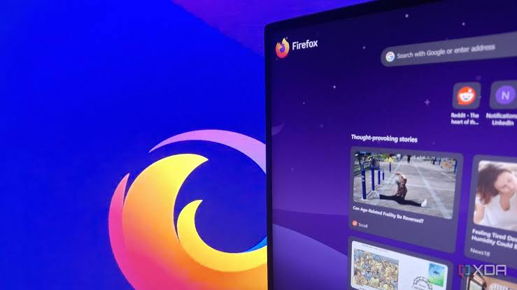
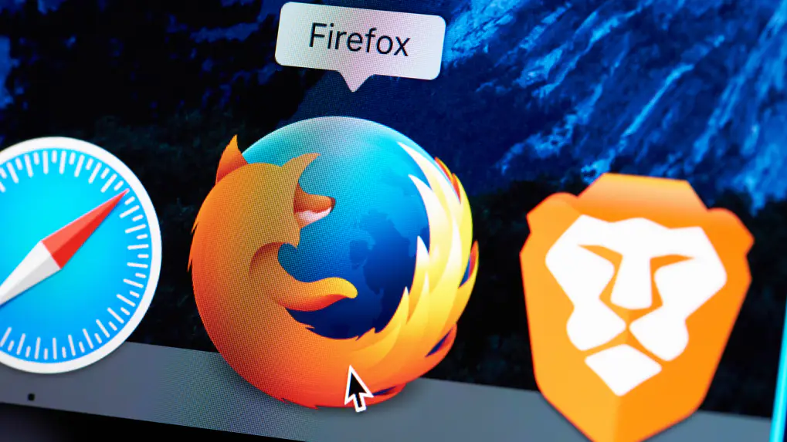

The Technologies Behind Firefox
Firefox relies on modern technologies to display web pages, run JavaScript, and provide a smooth browsing experience. Its Gecko engine interprets HTML and CSS to render websites.
Explore TechnologiesDiscover the history of a browser that helped shape the evolution of the Web.
Discover More
In 1998, Netscape released the source code of its browser, giving rise to the Mozilla project and a new community of developers.
Read More
The Phoenix project emerged with the goal of creating a lightweight, fast, and easy-to-use browser. It would later become Firefox.
Read MoreOn November 9, 2004, Mozilla Firefox 1.0 was officially released. It quickly gained popularity thanks to its simplicity and useful features.
Read More
Firefox continues to evolve to support Web standards, improve security, and protect the privacy of its users.
Read MoreFirefox relies on modern technologies to display web pages, run JavaScript, and provide a smooth browsing experience. Its Gecko engine interprets HTML and CSS to render websites.
Explore TechnologiesGecko is Firefox's rendering engine. It transforms HTML and CSS code into web pages that users can view and interact with.
Read MoreSpiderMonkey is Firefox's JavaScript engine. It executes the code that makes websites interactive and dynamic.
Read MoreFirefox includes various protections to reduce browsing risks, block certain trackers, and protect users' personal data.
Read More
Firefox is developed by Mozilla and its community. Its source code is publicly available, encouraging transparency and contributions from developers.
Read MoreSince its beginnings, Mozilla has advocated for an open, accessible Web that respects its users. Through Firefox, the organization aims to provide an alternative to dominant browsers and give internet users greater control over their online experience.
Learn MoreFollow Us: